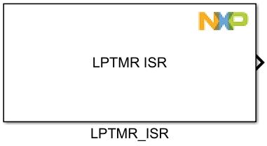
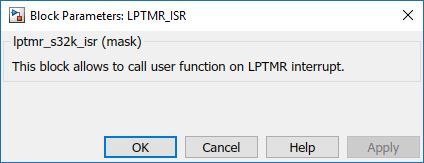

LPTMR ISR Block
This block allows to call user function on LPTMR interrupt.
Block Image
Inputs:
- None
Outputs:
- None
Parameters and Dialog Box
Note
By default the interrupt request is disabled. The first appearence in the project of this block enables the interrupt request in the initialize function.
Block Dependency
Block Miscellaneous Details
- None